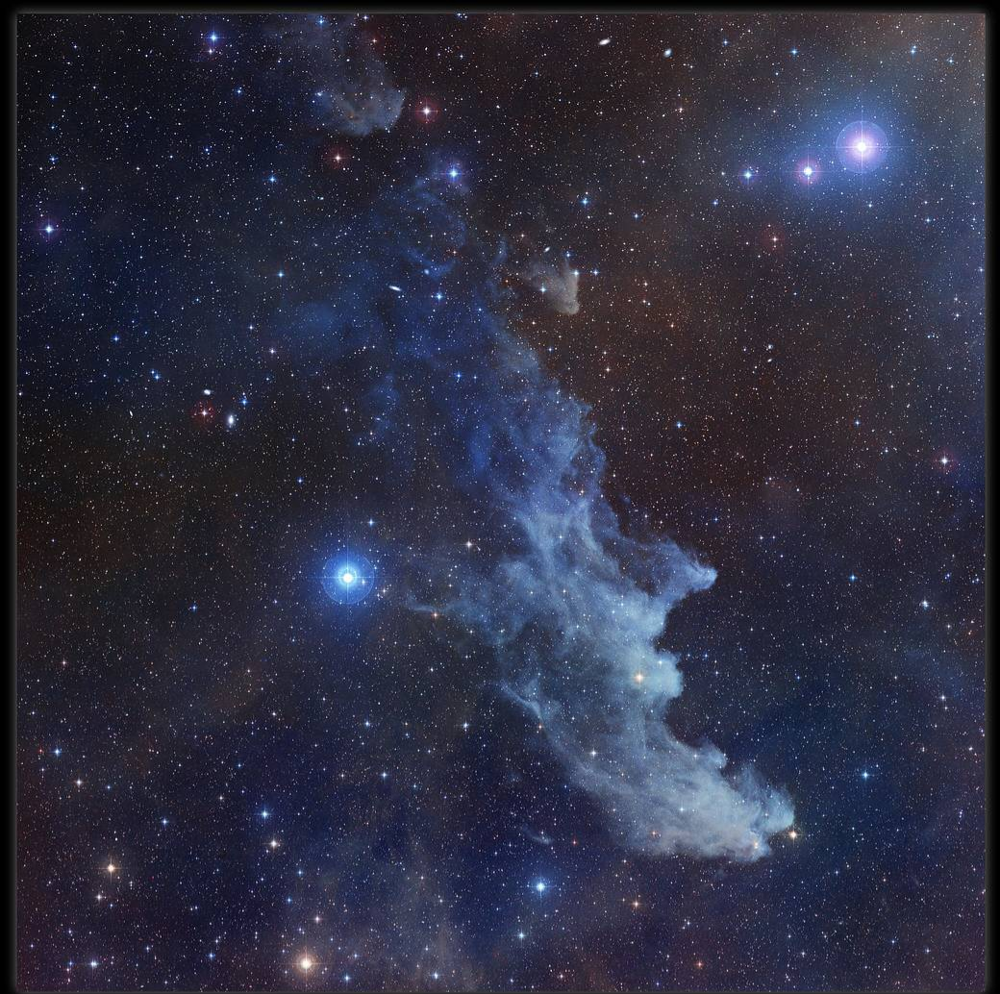
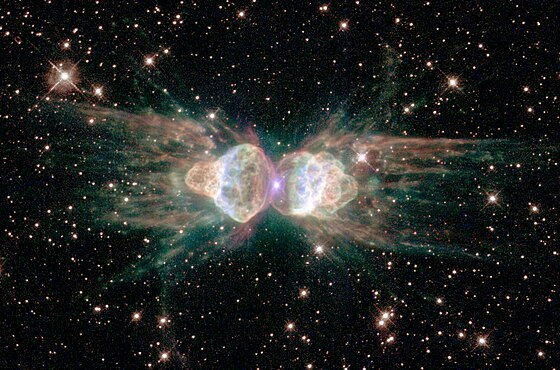
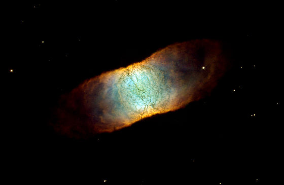

La nébuleuse de la Tête de sorcière se trouve dans la constellation de l'Éridan, à bonne distance de la Terre : 900 années-lumière. Nez pointu, menton en avant, la sorcière de l'espace apparaît bleue dans la lumière réfléchie par Rigel, une étoile supergéante
Le « corps » de la nébuleuse de la Fourmi est fait de deux lobes de gaz brûlant éjectés à plus de 1000 km/s par une étoile mourante.
La nébuleuse de la Rétine a une forme inhabituelle, en cylindre. Du gaz chaud s'échappe de chaque bout et de la poussière assombrit les parois.
 Lien vers Aller plus loin ... Lien vers la page d'acceil